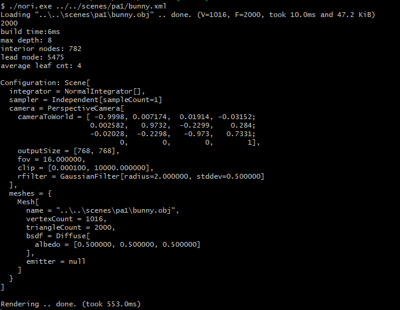
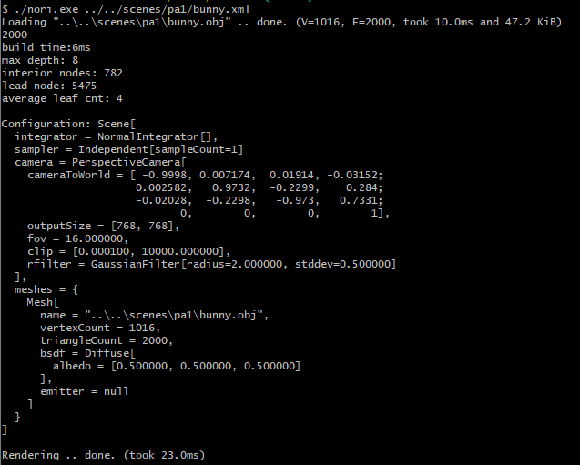
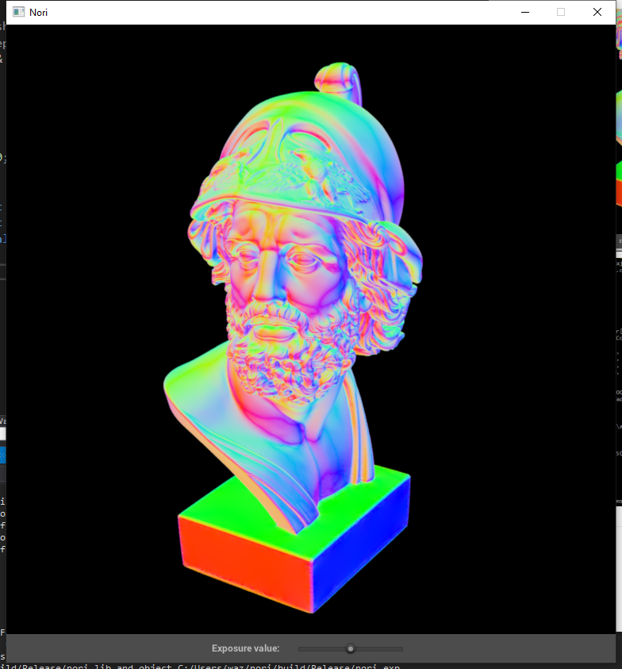
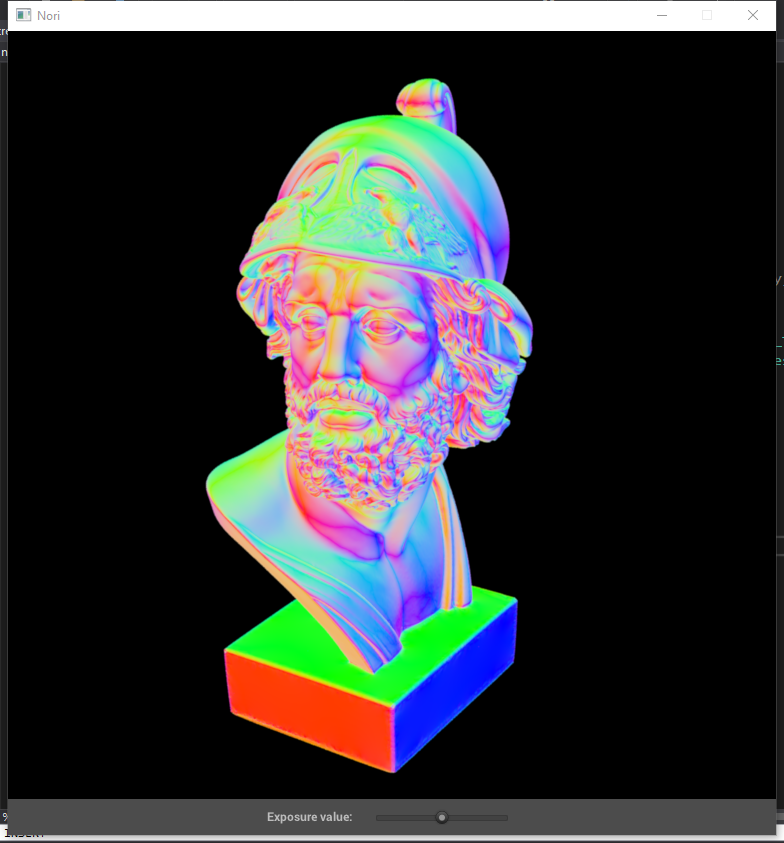
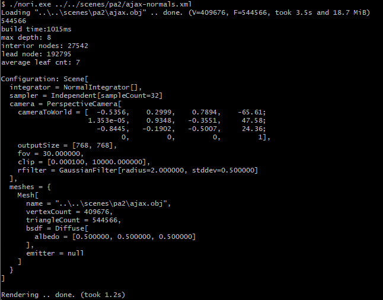
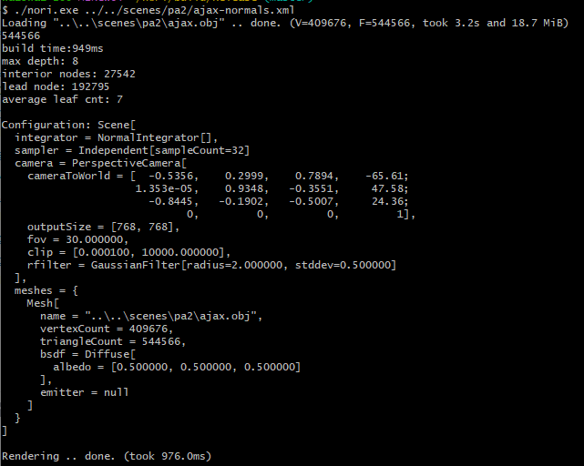

【Nori】Ray Tracing Acceleration Data Structures
任务
这个lab的任务是实现一个octree来加速
Part 1: Octree construction
What is a reasonable max depth of the tree? (2 pts)
我们需要限制树的深度是因为如果mesh有一部分三角形密度过高，很可能导致一直无法让bounding box里三角形的数量小于10， 导致递归的堆栈溢出。 对比了在不同深度中， leaf node的平均三角形数量。 发现在depth = 8的时候，平均三角形的数量为7， 最接近我们希望的10，所以8应该为最好的最大深度。
What information do you store per octree node? (2 pts)
我们对node的定义如下：
1
2
3
4
5
struct Node {
BoundingBox3f box;
std::vector<NodePtr> children;
std::vector<uint32_t> ids;
};
- children为子节点的数组，每一个元素为指向子节点的unique ptr。
- box 为包住当前节点的bounding box
- ids 为被当前节点包住的所有三角形的id
How many bytes of memory does one of your octree nodes occupy? (3 pts)
- box 里存了min和max两个点，每一个点里有3个float。 所以size 342 = 24
- vector里存了3个元素： begin(), end(), capacity的指针， 所以size 为 3*8 = 24。
所以最终的size为 24 + 24*2 = 72
Compute statistics during the tree construction. For the Ajax scene, report:
- Construction time with your local machine (not graded) 949ms
- Number of interior nodes (2 pts) 27542
- Number of leaf nodes (2 pts) 192795
- Average number of triangles per leaf node (a triangle can exist in multiple nodes) (2 pts) 7
Part 2: Ray traversal
Explain the logic of your traversal function and justify its correctness. (4 pts)
从根节点开始搜索，如果ray跟子节点的box相交，那么就递归搜索子节点。如果到了叶节点，那么就用brute force方法遍历每一个叶节点中的三角形。这么做能保证遍历了每一个与ray相交的三角形。
Measure the render time of the Ajax scene on your machine. How much of a speed-up did you achieve over what was there before? (5pts)
比较bunny 的结果： 553ms vs 23ms
| brute force | octree |
|---|---|
|  |  |
Part 3: Improved ray traversal
Include the surface normal visualization of the Ajax bust rendered by both your basic and improved implementations. They should match perfectly.
| without sort | with sort |
|---|---|
|  |  |
How dit you implement the sorting? Explain your design choices. (2 pts)
建立一个数组存放到ray原点的距离和在children数组中的下标，根据距离排序：
1 | std::pair<float, size_t> distances[8] = {}; |
Measure the render time with this improved version. How much of a speedup is this relative to Part 2? Elaborate the configuration details you use for comparison.
1.2s vs 949ms
| without sort | with sort |
|---|---|
|  |  |